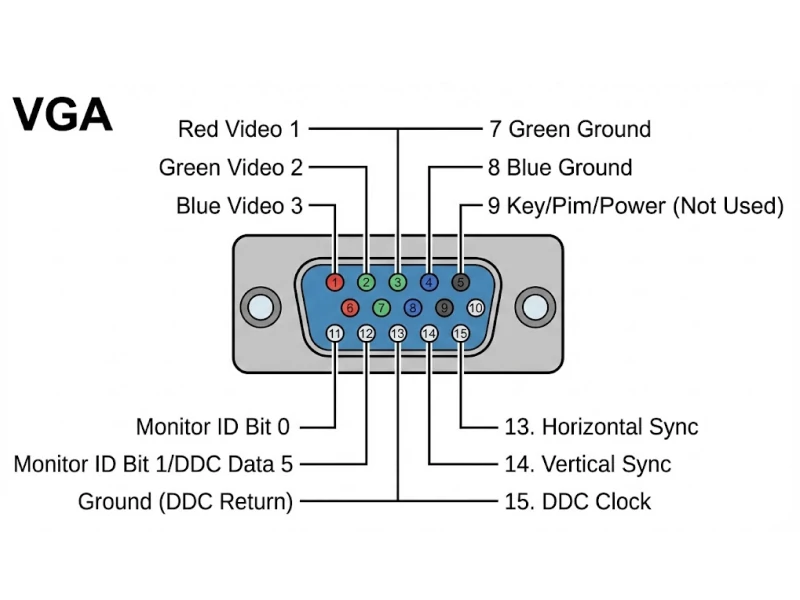
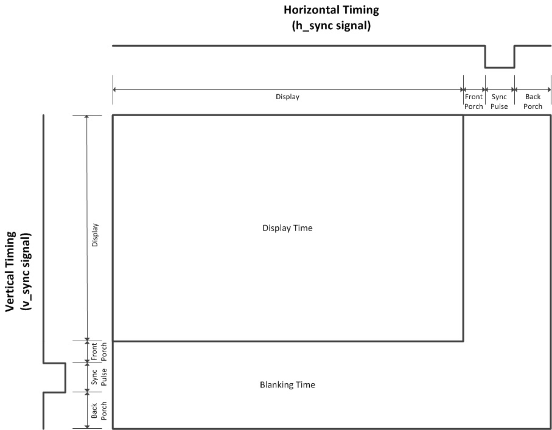

A couple of years ago I saw a video by Ben Eater (one of the most magnificent engineering tutorial makers in the world IMO!) where he built a video card using simple logic ICs. Unlike modern GPUs it doesn't do any compute, but it generates a signal that old VGA monitors can read properly. Since the project requires cutting, stripping and folding an absolutely enormous amount of finicky cables, I wisely decided against listening to his nerd-sniping siren-like Bob-Ross-esque voice and letting it go.
Well, today I wanted to learn how to do precise timing on an MCU (I'm making quadcopters, ESCs and other fine electrical contraptions) and I figured what better way than to implement a VGA video out on one of the many pico boards lying around the house.

The circuit is trivial schematically, but the dense VGA connector makes it look scary. Even that puny little amount of hardware would've been challenging for my sausage fingers some years ago, but nowadays I feel like I can actually solder.
What you see here are the 3 main signals RGB connected with a red, green and blue wire. The 2 yellow wires are the H and V pins, which are used for syncing (more on that later). You would expect there to be a single ground pin, but we actually need 4!
On the back side you can see all the resistors. Take the RGB pins. They have a 75Ω internal resistance and need to be driven at 0.7V. The rp2040 GPIO pins are 3.3V, so I add a 270Ω resistor. This makes a voltage divider that's good enough for us.
3.3 * 75 / (75+270) = 0.72V
Really you should watch Ben's tutorial, but if you don't, here's the brief:
There are many similar ways to transmit data over VGA, depending on the resolution and framerate you want to show. The most common is 640x480 at 60FPS. Actually it is the worst possible resolution, but even that will be a challenge.
If you want to display video with those parameters you have to emit a pixel at 25.175MHz or once every 39.72ns. Yes, these are NANOseconds. There are a billion of those in a second. You have to be really quick! No time for faffing around. The pico's chip is rp2040, which runs at 125MHz by default. That means it can execute one instruction in 8ns at best. Some instructions, like reading memory, take two cycles - 16ns. This means you have just a couple of instructions per pixel. This already smells like assembly, but let's not get ahead of ourselves.
The actual signal goes like this:
0p: put the correct voltage on the RGB pins for the pixel at coordinates x=0 y=0.
1p: same for x=1 y=0
2p: same for x=2 y=0
...
639p: x=639 y=0. This concludes the visible area.
640p: DON'T GO to y=1. Instead, display 16 black pixels. This begins the weirdly called "front porch" area
655p: last black pixel and end of "front porch"
656p: we begin the "sync pulse" part of the signal. Pin H is pulled low
752p: end of "sync pulse". Pin H is pulled high again, which is its default
state. This sync lasts 96pixels worth of time and the monitor uses it to
synchronize itself with us.
752-799p: Don't do anything. Just black. Called the "back porch". I don't
understand the reasoning behind it but monitors expect it so we have to do it.
48 wasted pixels IMO.
I hope this does not sound that bad, because what I described is just a single line. We have to repeat that 480 times. Then we have another front porch, sync pulse and back porch phases, but this time with the V pin instead of the H pin. Maybe this 2d diagram shows it better:

The signal is 1d of course, but imagine that we show every 800 pixels worth of time on a new line in the diagram.First idea I had was to try to do it as anyone that has just touched an arduino would do it. Put the pins in the state you want and wait a bit.
gpio_put(PIN_R, 0); gpio_put(PIN_G, 1); gpio_put(PIN_B, 0); gpio_put(PIN_H, 1); gpio_put(PIN_V, 1); delay_ns(39.72)
This would not work, at all! Like not even a little bit. Here's a couple of issues.
First issue is an easy fix, there's already a premade function that changes multiple GPIOs at the same time. Second one is tricky. There is busy_wait_at_least_cycles(N), which takes at least N cycles, as per the docs. Not ideal, but it should be enough, right?
Here's what the code starts to look like:
for (int line = 0;line < VER_FP_LINES;line += 1) {
busy_wait_at_least_cycles(3257); // VA + FP 656px
gpio_clr_mask(1 << PIN_H); // SP
busy_wait_at_least_cycles(476); // 96px
gpio_set_mask(1 << PIN_H); // BP
busy_wait_at_least_cycles(238); // 48px
}
Sadly, no image appeared on the screen. I could hear some kind of clicking from the monitor, so I knew I was getting close, it was seeing some semblance of a signal and preparing to turn on, but it was desyncing before it knew what was happening.
A powerful idea came to mind. What if instead of trying to take different steps take a predefined amount of time, I just calculate how long they should take and wait until this time has come? It sounds weird, but this means I can ignore stuff like variable initialization, loop steps or anything like that. If I'm supposed to pulse a sync signal for 96pixels and then chill for 48 more, I can do
gpio_clr_mask(1 << PIN_H) wait_until(96); gpio_set_mask(1 << PIN_H) // something else, god knows how many cycles wait_until(144); // 144 == 96 + 48
Instead of solely relying on the somewhat mysterious and random (for now) busy_wait_at_least_cycles alone, I found out about SysTick. This is a 24bit timer that counts down every clock. It runs in the background, without slowing your program down. Reading its value takes 2 clock cycles, as fast as any other memory read. So I made something like this
// Since CPU is 125MHz and VGA pixel is 25.175MHz, this means I have to do 4.96 ticks between every pixel
#define pixels_to_tick 4.965243296921549
static inline void wait_until_pixel(int pix) {
float tick = pix * pixels_to_tick;
int end_tick = START_TICK - tick;
while(systick_hw->cvr > end_tick) {}
}
This of course does not work. Poor rp2040 can't multiply floating point numbers. GCC puts some kind of 32 cycle monstrosity (or maybe more I forgot already) that emulates an FPU. Ok then, maybe I can get close enough with integer math?
static inline void wait_until_pixel(int pix) {
int tick = pix * 5 - pix / 32 - pix / 256;
int end_tick = START_TICK - tick;
while(systick_hw->cvr > end_tick) {}
}
Anyone that takes more than 5 minutes can figure out a smarter way to do this. Division of an unsigned number by a power of 2 can be implemented in a single cycle (pix is signed, so the compiler even adds a couple of extra instructions to round it correctly). This needs a multiply, 2 subtractions and 2 shifts. Still, enough non-crappy ideas were put on the board and the monitor decided to throw me a bone. I could draw complex imagery like stripes!
The estimation is pretty rough. A full frame is 525x800=420000 pixels. This
estimate will calculate that the frame should be done in
420000*5 - 420000/32 - 420000/256 = 2085235
Actual value should be
420000*4.965243 = 2085402
A difference of 167 ticks!
At this point I started peeking at the disassembly. It dawned on me
that things were messier than expected. For example, I imagined that
pix * 5 would be translated to something like mul r0, r0, #5.
But since Cortex-M0+ does not support multiplying with an immediate
value (the 5), the compiler did this
mov r1, r5 mul r0, r0, r1
Or even this!
mov r1, r0 lsls r1, r1, #2 adds r0, r1, r0
If the immediate value is too big, it starts using all sorts of tricks to fit in 2 or 3 instructions. This was everywhere! To combat this, I decided to overclock the CPU to 252000000Hz and to put a bit more effort into making sure every line of C produced nice and tight assembly.
For example, here's the new wait_until:
static inline void wait_until_pixel(uint64_t pix) {
#if CPU_CLOCK_FREQ == 125000000
int tick = (pix * 162701) >> 15;
#elif CPU_CLOCK_FREQ == 250000000
int tick = (pix * 162701) >> 14;
#elif CPU_CLOCK_FREQ == 252000000
int tick = (pix * 164003) >> 14;
#elif CPU_CLOCK_FREQ == 270000000
int tick = (pix * 175717) >> 14;
#endif
int end_tick = START_TICK - tick;
while(systick_hw->cvr > end_tick) {}
}
As you can see, I was doing lots of mostly futile experiments with CPU frequency.
Two important ideas finally allowed me to solve the problem. First - not striving for a perfect VGA. Turns out monitors can calibrate themselves if the timing is wrong, as long as it is consistently wrong! I put the CPU freq to 252MHz and decided to do 25.2MHz VGA signal. This means every pixel is exactly 10 cycles.
At this point, I was programming in assembly through a confusing layer of C that just got in the way. Like driving a car in GTA with a keyboard. So I decided to use an asm() block and rewrite the color emitting loop directly.
register uint32_t reg_video asm("r0") = (uint32_t)videoout;
register uint32_t reg_lut asm("r1") = (uint32_t)rgb_to_mask;
register uint32_t reg_sio asm("r2") = (uint32_t)sio_hw;
// [r2, #16] = out mask
// [r2, #20] = set mask
// [r2, #24] = clr mask
for (int linesleft = VER_VA_LINES;linesleft != 0;linesleft --) {
register uint32_t reg_cnt asm("r6") = HOR_VA_PIXELS / 2;
asm volatile(
".syntax unified\n"
"1:\n"
"ldrb r3, [r0]\n" // @0-1 r3 = *video
"lsrs r4, r3, #4\n" // @2 r4 = r3 >> 4
"lsls r4, r4, #2\n" // @3 r4 *= 4
"ldr r4, [r1, r4]\n" // @4-5 r4 = *(rgb_to_mask+r4)
"str r4, [r2, #16]\n" // @6 sio_hw->out_mask = r4
"adds r0, r0, #1\n" // @7 video ++
"nop\n" // @8
"nop\n" // @9
"movs r5, #15\n" // @10 r5 = 0b1111
"ands r5, r3, r5\n" // @11 r5 = r3 & (0b00001111)
"lsls r5, r5, #2\n" // @12 r5 *= 4
"ldr r5, [r1, r5]\n" // @13-14 r5 = *(rgb_to_mask+r5)
"subs r6, r6, #1\n" // @15 counter --
"str r5, [r2, #16]\n" // @16 sio_hw->out_mask = r5
"nop\n" // @17
"bne 1b\n" // @18-19
// End of pixel loop
: "+r"(reg_video), "+r"(reg_cnt)
: "r"(reg_lut), "r"(reg_sio)
: "r3", "r4", "r5", "cc", "memory"
);
// @6399: 319 pixel-pairs at 20c and 1 pixel with 19c
gpio_clr_mask(MASK_RGB); // 1c: str to SIO
busy_wait_at_least_cycles(HOR_FP_PIXELS * 10 - 2);
gpio_clr_mask(1 << PIN_H);
busy_wait_at_least_cycles(HOR_SP_PIXELS * 10 - 2);
gpio_set_mask(1 << PIN_H);
busy_wait_at_least_cycles(HOR_BP_PIXELS * 10 - 4);
}
What a success! The lines were nice and sharp, although jittery.
Of course, there's a lot more to it than color. I rewrote all the tight little 4-line C loops into cycle-perfect assembly blobs of ugliness. Some say we should write code to be read first by humans and only accidentally executed by machines. Well this code will execute 60 times per second and hopefully never be read by a human again!
asm volatile(
".syntax unified\n"
"vga_frame:\n"
/***************
* VERTICAL VA *
***************/
"movs r7, #240\n"
"adds r7, r7\n" // r7 = VER_VA_LINES
"mov r0, r8\n" // r0 <=> &pixel
"vga_line:"
"movs r6, #160\n"
"adds r6, r6\n" // r6 = HOR_VA_PIXELS/2 = 320
"vga_pixels:\n"
"ldrb r3, [r0]\n" // @0-1 r3 = *pixel
"lsrs r4, r3, #4\n" // @2 r4 = r3 >> 4
"lsls r4, r4, #2\n" // @3 r4 *= 4
"ldr r4, [r1, r4]\n" // @4-5 r4 = *(rgb_to_mask+r4)
"str r4, [r2, #16]\n" // @6 sio_hw->out_mask = r4
"adds r0, r0, #1\n" // @7 pixel ++
"nop\n" // @8
"nop\n" // @9
"movs r5, #15\n" // @10 r5 = 0b1111
"ands r5, r3, r5\n" // @11 r5 = r3 & (0b00001111)
"lsls r5, r5, #2\n" // @12 r5 *= 4
"ldr r5, [r1, r5]\n" // @13-14 r5 = *(rgb_to_mask+r5)
"subs r6, r6, #1\n" // @15 counter --
"str r5, [r2, #16]\n" // @16 sio_hw->out_mask = r5
"nop\n" // @17
"bne vga_pixels\n" // @18-19
// @6399: 319 pixel-pairs at 20c and 1 pixel with 19c
"bl vga_fp_sp_bp\n"
"subs r7, #1\n" // 4c
"bne vga_line\n"
/***************
* VERTICAL FP *
***************/
"movs r7, #10\n" // r7 = VER_FP_LINES
"1:"
"bl vga_black_va\n"
"bl vga_fp_sp_bp\n" // @6400 cycles
"subs r7, #1\n"
"bne 1b\n"
/***************
* VERTICAL SP *
***************/
"ldr r5, [r1, #68]\n" // r5 = *(rgb_to_mask+17*sizeof(uint32)) = mask_v
"str r5, [r2, #24]\n" // sio_hw->clr_mask = r5
"movs r7, #2\n" //
"1:"
"bl vga_black_va\n"
"bl vga_fp_sp_bp\n"
"subs r7, #1\n"
"bne 1b\n"
/***************
* VERTICAL BP *
***************/
"ldr r5, [r1, #68]\n" // r5 = *(rgb_to_mask+17 * sizeof(uint32)) = mask_v
"str r5, [r2, #20]\n" // sio_hw->set_mask = r5
"movs r7, #33\n" //
"1:"
"bl vga_black_va\n"
"bl vga_fp_sp_bp\n"
"subs r7, #1\n"
"bne 1b\n"
"b vga_frame\n"
/***************
* UTILITIES *
***************/
"vga_black_va:"
// @0-2 calling with bl is counted here
"movs r5, #142\n" // @3
"movs r6, #15\n" // @4
"muls r6, r6, r5\n" // @5 r6 = 2130
"nop\n" // @6
"nop\n" // @7
"nop\n" // @8
"1:\n"
"subs r6, #1\n"
"bne 1b\n"
"bx lr\n" // 2c
// @6400 = (2130*3-1=6389) + 9 + 2
"vga_fp_sp_bp:"
// Front porch
// @0-2 calling with bl is counted here
"movs r6, #51\n" // @3
"ldr r5, [r1, #72]\n" // @4-5 r5 = *rgb_to_mask = mask RGB
"str r5, [r2, #24]\n" // @6 sio_hw->clr_mask = mask RGB
"nop\n" // @7
"1:\n"
"subs r6, #1\n"
"bne 1b\n"
// @160 = 51*3-1 + 8
// Sync pulse
"movs r5, #6\n" // @0
"movs r6, #53\n" // @1
"muls r6, r6, r5\n" // @2 r6 = 318
"nop\n" // @3
"ldr r5, [r1, #64]\n" // @4-5 r5 = *(rgb_to_mask+16 * sizeof(uint32))
"str r5, [r2, #24]\n" // @6 sio_hw->clr_mask = mask_h
"1:\n"
"subs r6, #1\n"
"bne 1b\n"
// @960 = 318*3-1 + 7
// Back porch
"movs r6, #156\n" // @0
"nop\n" // @1
"nop\n" // @2
"nop\n" // @3
"ldr r5, [r1, #64]\n" // @4-5 r5 = *rgb_to_mask = mask H
"str r5, [r2, #20]\n" // @6 sio_hw->set_mask = mask H
"nop\n" // @7
"1:\n"
"subs r6, #1\n"
"bne 1b\n"
"bx lr\n" // 2c
// You might expect 480, but all loops calling vga_fp_sp_bp spend 3 cycles
// after it, so we trim a little here
// @477 = (156*3-1) + 8+2
: "+r"(reg_video)
: "r"(reg_lut), "r"(reg_sio)
: "r0", "r3", "r4", "r5", "r6", "r7", "lr", "cc", "memory"
);
What a magnificent perfection. There is still one small problem in the first few lines, but I decided this was enough for me.
Still, stripes are a boring demo and I believe my little VGA driver needs something with more pop. I didn't use AI for the code above, but it was getting reeeeally late and I wanted some cool animations. I pointed Opus 5.5 at the code base and it generated some amazing little animations writing directly to the video array my vga code was reading.